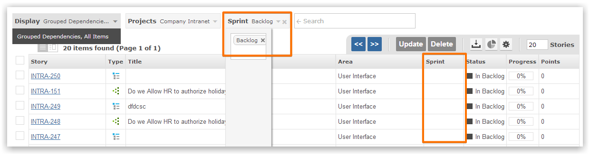
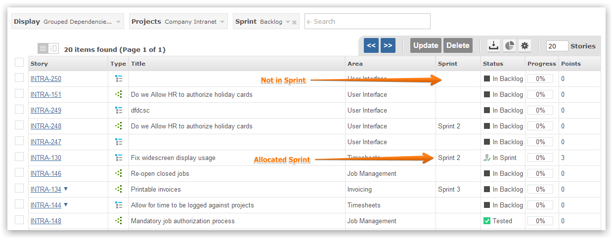
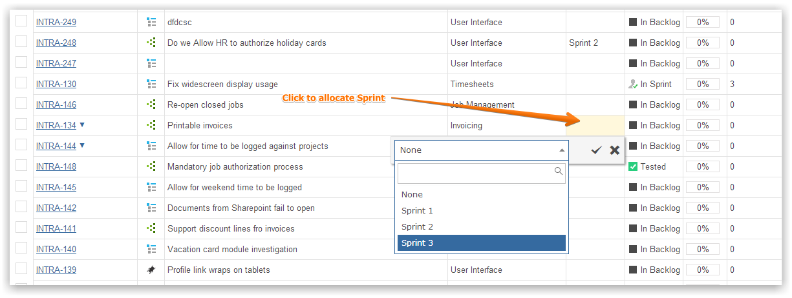

The grid can be used to find items in the Product Backlog and then assign them to a Sprint.
You can filter to show only those items in the Product Backlog.

Simply click on the sprint cell to set the Sprint for the item.

You can click to assign a sprint value for any grid item.
